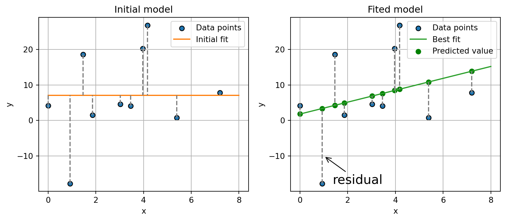

Sandro Cavallari
Home
Posts
Categories
All
(9)
Coding
(1)
Deep Learning
(5)
Linear Algebra
(1)
Statistics
(2)
Posts

Linear Regression
Statistics
Linear regression
[1]
is a widely utilized and straightforward machine learning model. It establishes a linear relationship between a dependent variable (represented on the…
Jan 15, 2024
Sandro Cavallari
Normalizing Flows
Deep Learning
Normalizing Flows (NF) represent a potent technique that facilitates the learning and sampling from intricate probability distributions
[1]
[2]
. These models, categorized as…
Nov 17, 2023
Sandro Cavallari
Finetune Large Models
Deep Learning
Nowadays, it is common practice to develop new machine learning projects starting from a large pre-trained model and fine-tuning it to the task at hand. Sam Altman, at the…
Jan 5, 2023
Sandro Cavallari
Efficient and Scalable Machine Learning Pipelines
Deep Learning
Jobs related to machine learning usually require managing massive datasets. A well-established rule of thumb that applies to most machine learning projects is that the…
Nov 13, 2022
Sandro Cavallari
Data Structures
Coding
Data scrtucures are efficent memory construct used to sotre and organize data in an efficent manner. Adopting the right data structure and having efficent access to the…
Oct 9, 2022
Sandro Cavallari
Evaluation Metrics for Ads Ranking Systems
Statistics
Ads ranking systems are the barebone of many modern business and became one of the main success story of machine learning applied to real-world problems. Given an…
Jul 15, 2022
Sandro Cavallari
Variational Autoencoders
Deep Learning
In this article, I will delve into the theoretical foundations of Variational Autoencoders (VAE). You can find the code used for both Convolutional Neural Network (CNN) and…
Jan 10, 2021
Sandro Cavallari
Basic Principles of Linear Algebra
Linear Algebra
Linear algebra is the branch of math and statistics that is devoted to the study of matrices and vectors. As such, it is broadly used to model real-world problems in…
Dec 23, 2020
Sandro Cavallari
Gradinet Descent and Backpropagation
Deep Learning
Most
deep learning
algorithm relay on the idea of
learning
some useful information from the data to solve a specific task. That is, instead of explicitly define every single…
Dec 22, 2020
Sandro Cavallari
No matching items